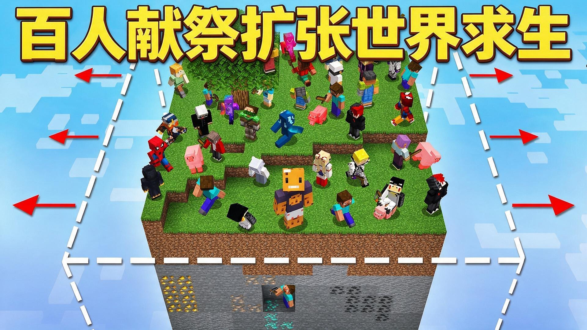
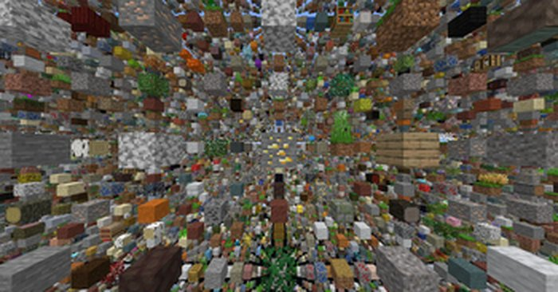
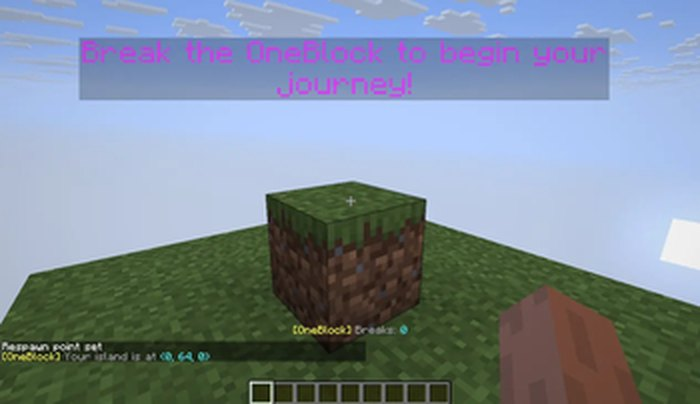

Maps
Things I played when vanilla survival got boring. Some of them are old and hard to find now, so a few cards take you to a search instead of a single page.
Puzzle and adventure

The Lost Ship
A puzzle map on a ship. There are more secrets than the map first suggests and the ending is not what I expected. Took an afternoon.
Puzzle Adventure
This Ain't No Normal Adventure
Made by a Chinese author. Puzzles, fights and a lot of hidden mechanics. There are jokes buried in it that only make sense if you are Chinese, which I enjoyed.
Puzzle Chinese
Adventure World
Several parts, one big map each, story carries over. I played the first three back to back. It is closer to watching a series than playing a map.
Adventure SeriesPvP

Bed Wars
Protect your bed, take theirs. Four teams, one winner. I played hundreds of rounds and peaked at Diamond. My hands are slower now.
PvP Team
Sky Wars
Everyone starts on their own island with a chest or two. Loot fast, bridge carefully, last one alive. I only play solo because I cannot coordinate.
PvP Solo
100 players, one world
A hundred players dropped into a world that keeps expanding. Watching it is more tense than playing it. There is a Chinese dub on Bilibili.
Video MultiplayerSurvival challenges

SkyBlock
One island, one tree, one chest, and you build everything from that. The oldest survival challenge there is. I play it again every version and never get far.
Survival Classic
SkyGrid
A grid of single blocks, one material per cell, nothing solid underneath. Every step is a decision. I fell into nothing three times and uninstalled it.
Survival Difficult
One Block
You get one block. Break it and it grows back, and the further you go the stranger the drops. I played a week and was not expecting an end portal.
Survival Creative